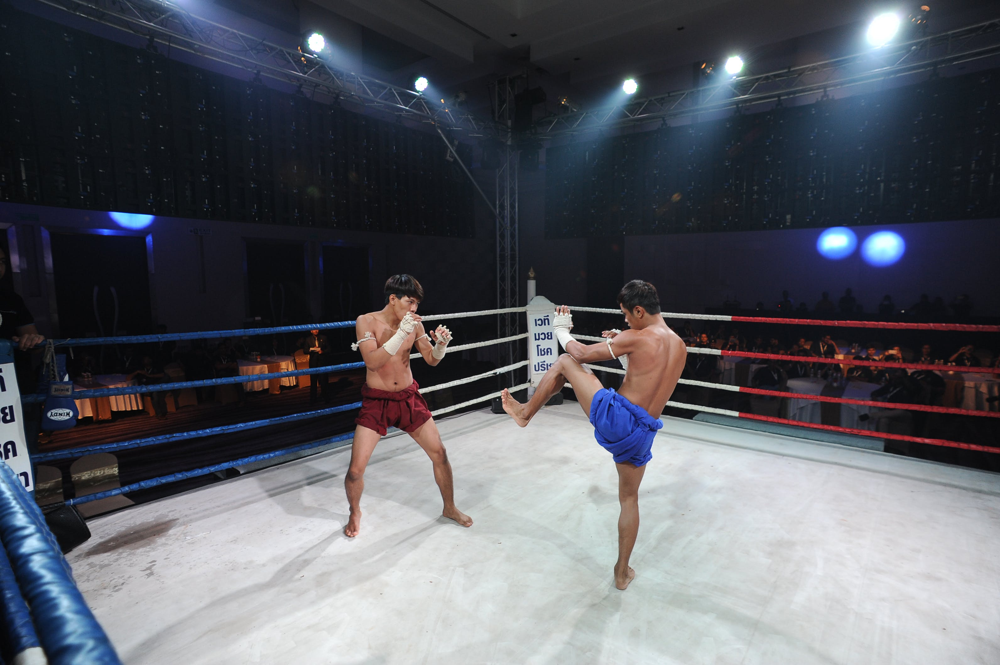

Origem
- A História do Muay Thai é bastante antiga, datando desde a formação do povo siamês (antigo povo tailandês) e seu Estado, o Sião, como era conhecida a região da Tailândia no século XIII.
- A arte tem raízes profundas na história e cultura tailandesas, mas infelizmente, muitos detalhes se perderam
devido à destruição de inúmeros registros escritos quando a Tailândia foi invadia pelos birmaneses no século
XIV.
- Os conflitos comuns à região no passado foram o palco do desenvolvimento do Muay Thai por séculos, sendo
a
arte de combate usada pelos guerreiros tailandeses no campo de batalha. O Muay Thai tornou-se mandatório para
os soldados que integravam o exército, sendo praticado inclusive em períodos de paz.
- Além disso, a constante ameaça das guerras tornou comum a presença de centros de treinamento por toda a
nação.
Jovens praticavam a arte por várias razões: defesa pessoal, exercício, disciplina, etc.
- O Muay Thai sempre foi considerado com alta estima pela realeza tailandesa, sendo praticado por diversos
governantes e seus herdeiros, pois acreditavam que bons guerreiros tornavam-se bons líderes e a prática
prepararia os futuros governantes.
- Um manual sobre a arte da guerra o Chupasart enfatizava o uso marcial de cada parte do corpo e ditava o
contexto filosófico de que o combate era mais do que o uso de armas. Deveria, principalmente, engajar mente,
corpo e alma em total comprometimento.
- O Muay Thai, ou A Arte das Oito Armas, é parte indissociável do dia-a-dia do povo tailandês, desde a
constituição de sua identidade cultural até os dias de hoje.